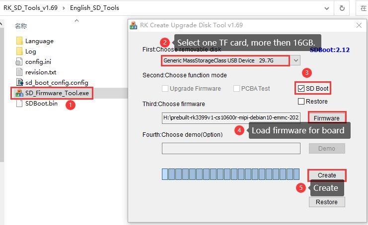

Debian 10 OS¶
Debian 10 OS on PX30 User Manual
This is the software manual for PX30 Chipsee industrial PC. If you’ve never developed on this hardware with a Debian 10 OS, this manual can get you started quickly.
FAQ¶
Backup Your OS Image For Bulk Installation¶
If you have finished developing your software, and plan to “copy” the whole system to many other Chipsee industrial PCs, you can backup the OS to an image file, just like the .img file you downloaded from Chipsee, or the OS we installed in the factory for you before shipping. And then you can flash it to many more devices.
Prepare for backup¶
We will use SDDiskTool to flash a bootable SD card, let your Chipsee PC boot from this SD card, then use this system to backup your OS image (the whole content on eMMC rootfs partition). You will need:
16GB or larger micro SD card.
SD card reader (to be used on your HOST PC).
A Windows PC to run the SDDiskTool.
A (X86 or X86_64) Linux HOST PC or virtual machine to make a new img file (make sure there is 25GB or more free space on the disk for the following process).
Two Chipsee prebuilt image, one is the image that you are developing your software on, the other is a prebuilt-xxx-sd-xx.img, if you cannot find the prebuilt-xxx-sd-xx.img of your device, you can use just the prebuilt-xxx-emmc-xx.img temporarily, we will release the sd image later.
Note
More on the prebuilt image: the core idea of backup is to “swap” your data and the prebuilt data. So we will need to download a prebuilt image that you’re developing your software on (the OS image that you’re currently using on the Chipsee PC), unpack that image, swap the data, then repack the image (imagine the old time people use a WinPE USB stick to boot and backup Windows!).
Note
We will use the prebuilt-xxx-emmc-xx.img (eMMC firmware) to boot the device from an SD card, but the image for eMMC has one known bug: it will need reboot a few times to get the SD partition to be mounted on “/”. We will release one new image for SD called prebuilt-xxx-sd-xx.img in the future. But at the moment we can still get by with the eMMC image in an SD card.
Prepare a Bootable SD Card¶
On your Windows PC, we open SD_Firmware_Tool.exe to process 1,2,3,4,5 steps to create a bootable SD card.
You need to download the Chipsee prebuilt image as we mentioned earlier. Find the one that fits your screen size in Chipsee prebuilt image page.
Once the SD card is flashed, Windows will show a warning to let you format the unrecognized partition, ignore or cancel it because the SDDiskTool creates some partitions that Windows doesn’t recognize.
{kind=link}
Follow the 5 steps on SDDisktool
Backup Your eMMC¶
Insert this SD card into the SD slot of the Chipsee PC and power it on, the Chipsee PC will boot into the system on the SD card (may need to reboot multiple times to boot from SD card, because of a known bug in the eMMC firmware, we will release a firmware for SD card in the future), we can use this system to backup the whole contents on eMMC rootfs partitions.
Use the way you like to execute the following commands, for example, serial debug or ssh. You can connect a keyboard and mouse to the Chipsee device and run them in the command line as well.
The eMMC rootfs partition is /dev/mmcblk2p8. We will backup the contents in /dev/mmcblk2p8.
{kind=link}
eMMC rootfs partition is /dev/mmcblk2p8
$ sudo su # export ROOTFS_DEV=/dev/mmcblk2p8 # mkdir /mnt/backuprootfs # mount $ROOTFS_DEV /mnt/backuprootfs/ # cd /mnt/ // sync would take an hour or more depending on the files in your system # tar --numeric-owner -jcvpf backuprootfs.tar.bz2 backuprootfs && sync # umount /mnt/backuprootfs
Now we have obtained the backup rootfs backuprootfs.tar.bz2 in the SD card partition
Generate New Image File¶
Poweroff the Chipsee PC. Put the SD card into your Linux HOST PC (or virtual machine).
You should find a /dev/sdX in your Linux system, for example /dev/sdb, which is this SD card, you should use your actual /dev/sdX here, if you don’t know which sdX is it, check with df -h and see which one’s size is most likely your SD card.
Now we mount /dev/sdb8 to find backuprootfs.tar.bz2
# mount /dev/sdb8 /mnt/
It will be in /mnt/mnt/backuprootfs.tar.bz2, we will copy it out to our Linux PC later.
Run the following command to generate a new .img file. Make sure you have at least 25GB free space on your Linux PC, the process produces a lot of intermediate files.
$ sudo su # git clone https://gitee.com/chipsee_admin/rk_pack_tools.git # cd rk_pack_tools # git checkout px30 // copy the Chipsee prebuilt img file to this directory # cp prebuilt-xxx.img . # ./cs-unpack.sh prebuilt-xxx.img // copy your backup rootfs from SD card to this directory # cp /mnt/mnt/backuprootfs.tar.bz2 . // generate rootfs.img file from backuprootfs.tar.bz2 # ./cs-mkrootfs.sh // generate new img file # ./cs-pack.sh prebuilt-new-xxx.img
Warning
If you see checksum miss match error or Error:<AddFile> write file failed,err=28, check your harddisk and make sure you have enough free space.
Now you have obtained your new img file prebuilt-new-xxx.img in the current folder, use this img file to flash other devices.
Disclaimer¶
This document is provided strictly for informational purposes. Its contents are subject to change without notice. Chipsee assumes no responsibility for any errors that may occur in this document. Furthermore, Chipsee reserves the right to alter the hardware, software, and/or specifications set forth herein at any time without prior notice and undertakes no obligation to update the information contained in this document.
While every effort has been made to ensure the accuracy of the information contained herein, this document is not guaranteed to be error-free. Further, it does not offer any warranties or conditions, whether expressed orally or implied in law, including implied warranties and conditions of merchantability or fitness for a particular purpose. We specifically disclaim any liability with respect to this document, and no contractual obligations are formed either directly or indirectly by this document.
Despite our best efforts to maintain the accuracy of the information in this document, we assume no responsibility for errors or omissions, nor for damages resulting from the use of the information herein. Please note that Chipsee products are not authorized for use as critical components in life support devices or systems.
Technical Support¶
If you encounter any difficulties or have questions related to this document, we encourage you to refer to our other documentation for potential solutions. If you cannot find the solution you’re looking for, feel free to contact us. Please email Chipsee Technical Support at support@chipsee.com, providing all relevant information. We value your queries and suggestions and are committed to providing you with the assistance you require.